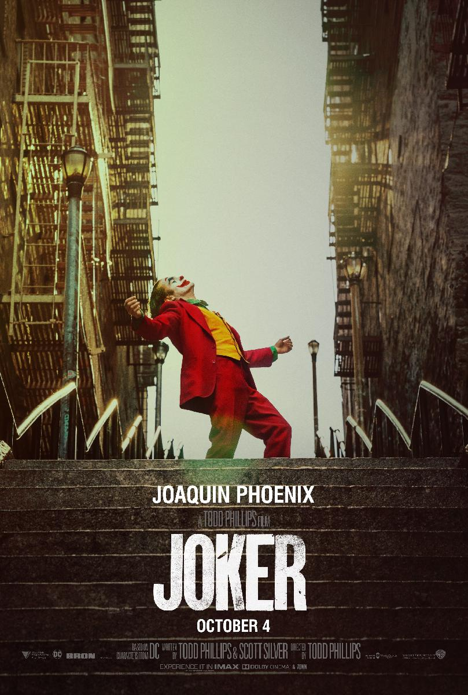

Joker est un film américain réalisé par Todd Phillips, sorti en 2019. Il met en vedette Joaquin Phoenix dans le rôle principal de Arthur Fleck, un homme marginal et instable qui se transforme en Joker, un criminel en série qui devient un symbole de rébellion dans la ville de Gotham.
Le film suit Arthur Fleck, un homme atteint de troubles mentaux qui travaille comme clown pour payer ses factures. Il vit dans une ville en crise où la criminalité est élevée et où les riches et les puissants se moquent des pauvres. Arthur essaie de se connecter avec les gens, mais il est constamment rejeté et moqué. Il se met à perdre le contrôle de sa santé mentale et de ses émotions, et il se met à agir sur ses impulses violents.
La trame du film est centrée sur la descente dans la folie d'Arthur Fleck, qui se transforme en Joker, un criminel en série qui devient un symbole de rébellion pour les citoyens opprimés de Gotham. Le film explore les thèmes de l'isolement, de la marginalisation, de la colère et de la violence, et il montre comment un individu peut devenir un criminel lorsqu'il est poussé à bout par la société.
Le film a été très bien accueilli par la critique, en particulier pour la performance de Phoenix en tant que Joker. Il a remporté de nombreux prix et nominations, dont l'Oscar du meilleur acteur pour Phoenix.